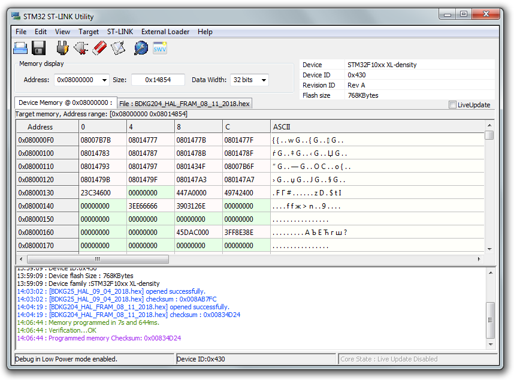
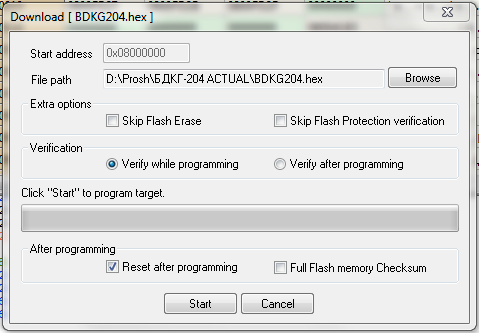
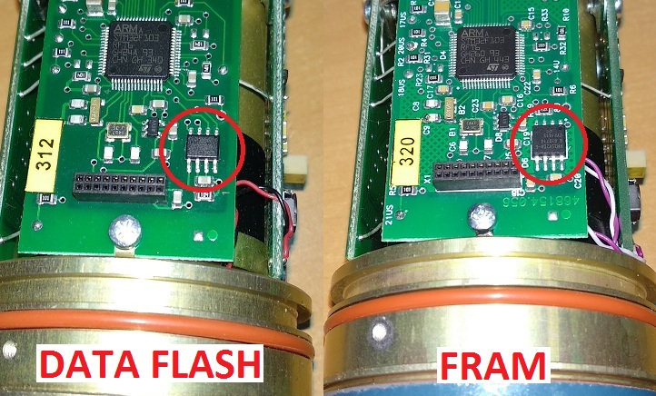
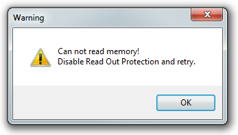
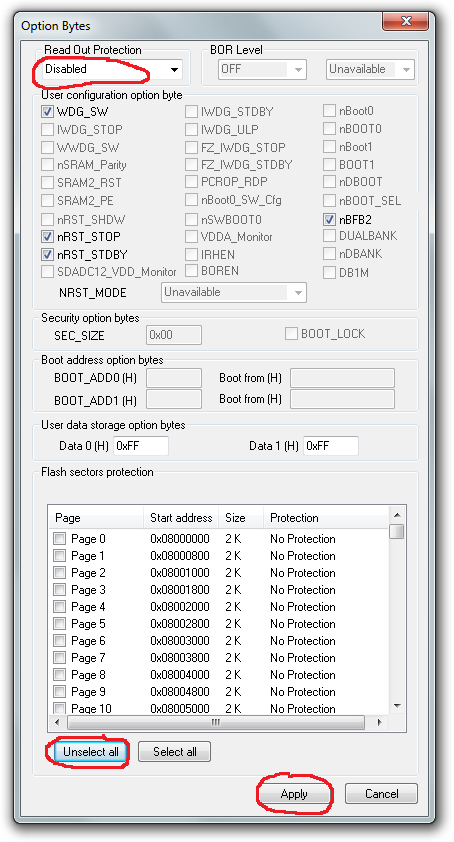
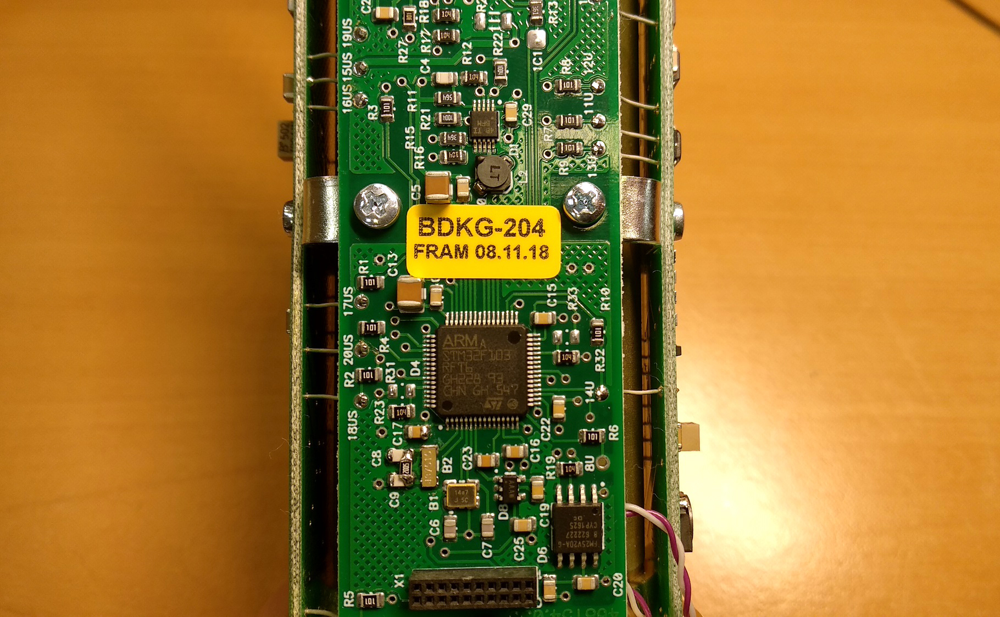
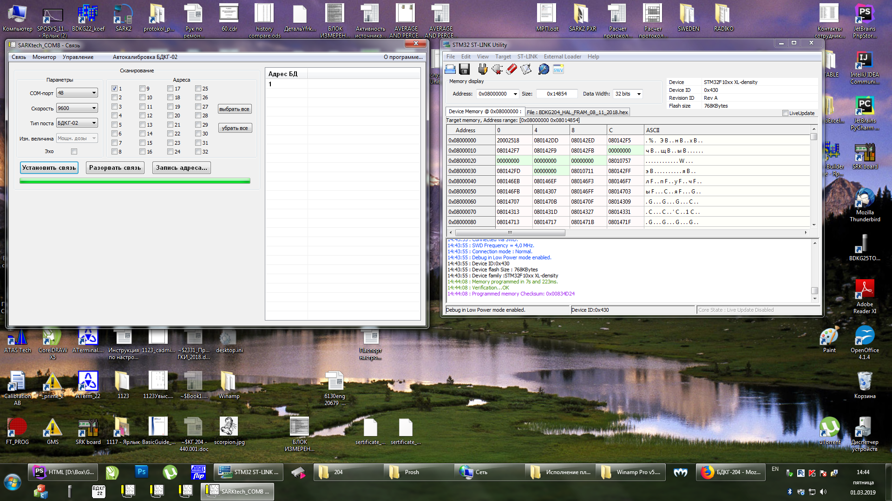

Прошивка БДКГ-204
- Подключить питание через ODU разъем → USB-COM адаптер. (На этапе прошивки — как питание, на этапе проверки работы — как обмен)
- Подключть программатор

- Запустить STM32-LINK 
- Target → Connect
- Target → Program & Verify 
- Выбрать прошивку (кнопка "Browse") Есть два типа прошивки, для старых приборов с памятью DATA-FLASH, и для новых, с памятью FRAM. Если прошить не той прошивкой, прибор не подключится 
- Нажать "Start"
Если появляется окно с ошибкой: "Can not read memory!"
Если появляется такое окно с ошибкой: 
Это значит, что устройство уже прошито, и прочитать или перезаписать прошивку нельзя. Чтобы убрать защиту, необходимо сделать следующее (Внимание! Существующая прошивка будет стёрта!) :
- Target → Option Bytes 
- Readout Protection ⇒ Disabled
- Flash Section Protection ⇒ Unselect All
- Apply
- Защита снята, прошивка стерта
Проверить корректность прошивки можно подключив устройство к SARKtech, тип устройства — БДКГ-02 (перед подключением обязательно отсоединить, подключить ODU разъёьм):
После проверки наклеить на плату наклейку с версией прошивки:
- Отдать на регулировку
- После линейки проверить коэффициенты
- Если всё хорошо, отдать на ПСИ
- Проверить на герметичность
- В этом БД фон настраивать не нужно. БД готов
Удобнее всего прошивать следующим образом: открыть одновременно и STM32-Link и SARKtech и разместить оба окна рядом. Прошить в STM, отключить-включить питание блока и сразу проверить в SARK, подключить другой блок и т. д. Окна не закрывать. 